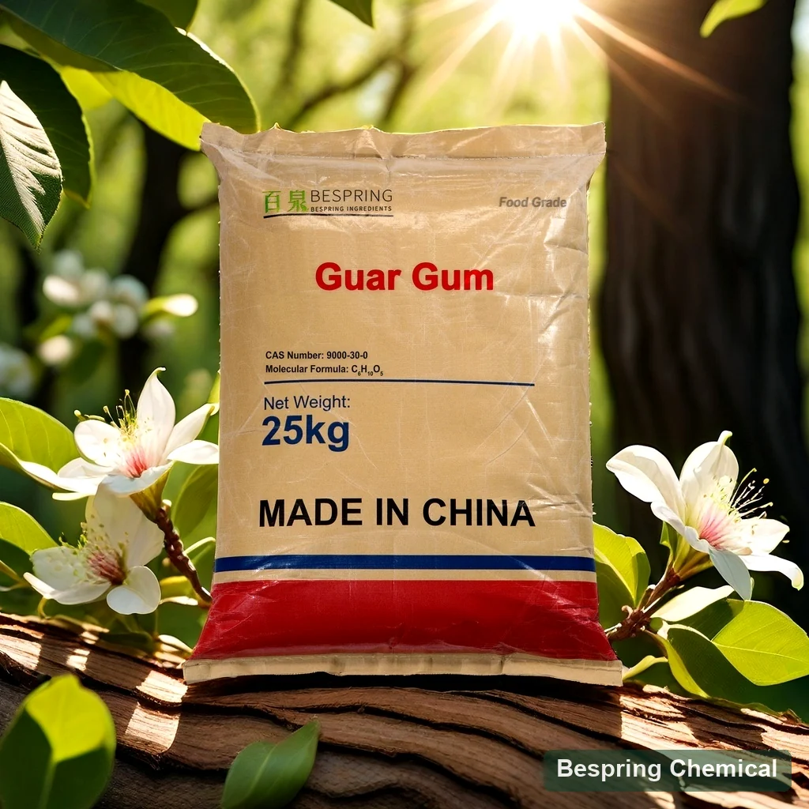
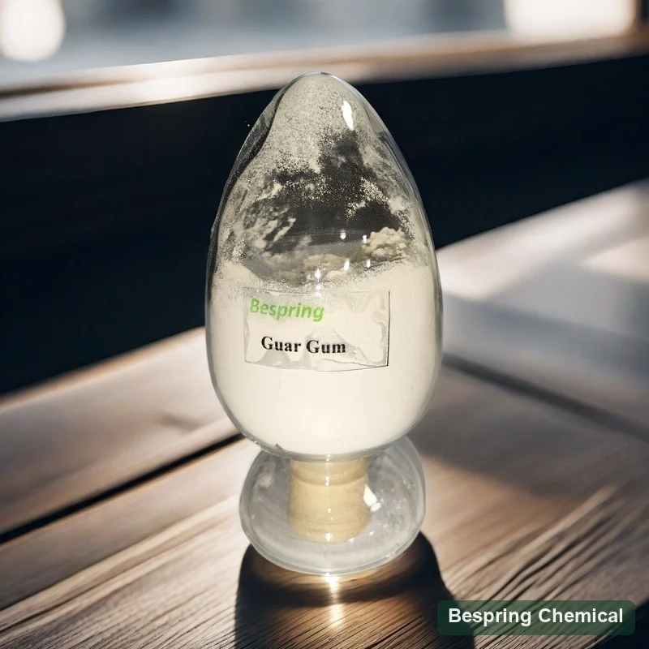
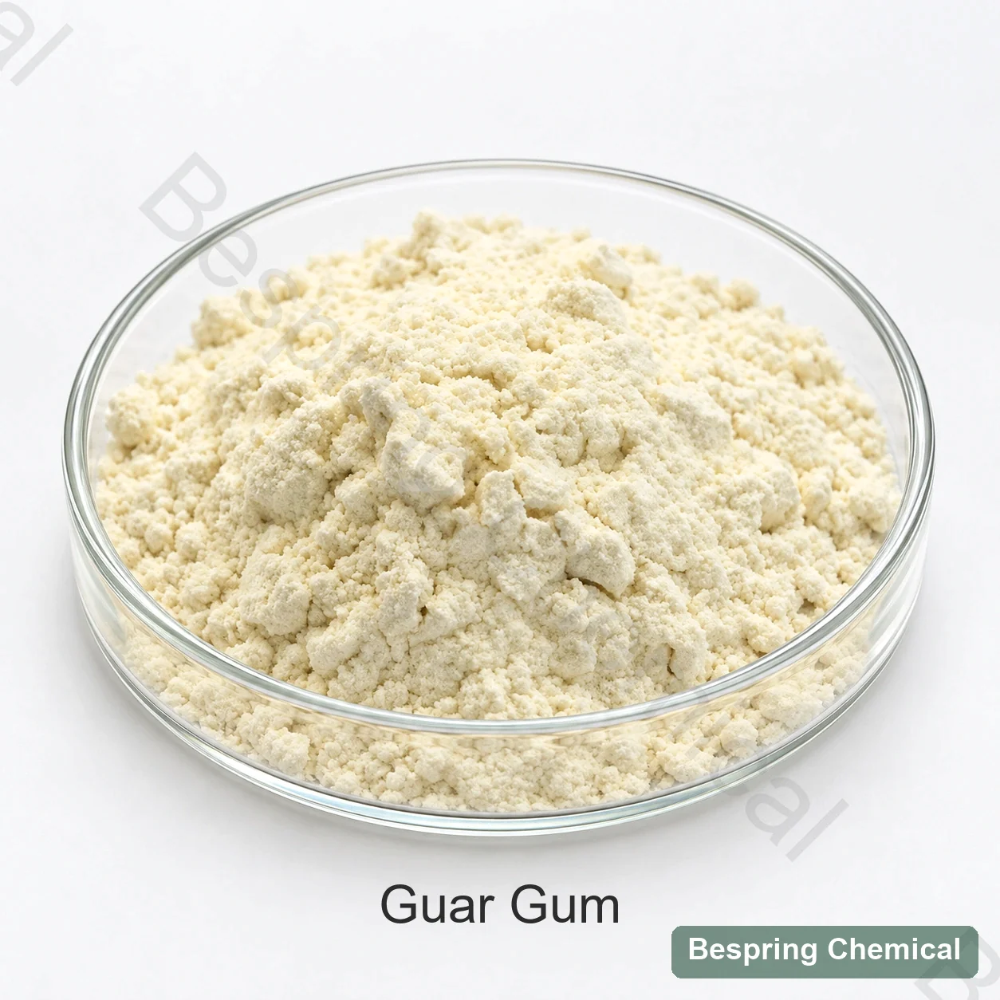

การกระจายตัวแบบอนุภาพ
กําหนดโพรไฟล์ Magnatural ไม่เฉพาะชื่อ เมชเท่านั้น การกระจายอนุภาคสามารถเปลี่ยนเวลาเปียกและเวลาว่างได้ โปรดตรวจสอบเส้นโค้งในวิธีการเสนอแทนการทําการรักษาเมชเพียงคนเดียวเป็นอัตราการรับประกัน
Cold-water galactomanan e412 / INS 412

Product image esche และ Package เมื่อมีการเรียงลําดับ
*ความหนืด: ค่าอ้างอิงทางการค้า 1% / 2 h ต้องยืนยันวิธีทั้งหมด ปริมาณสั่งขั้นต่ำ 500 kg และบรรจุภัณฑ์ 25 kg เป็นข้อมูลอ้างอิงเดิม ขึ้นกับเกรดที่เสนอและเงื่อนไขปัจจุบัน
การแสดงตัวของ BPDกัวลาร์ เอนโดสเพอร์ม
ฟังก์ชัน น้ําเย็นต้องการเส้นโค้งความเข้ม
การเปรียบเทียบทางนิเวศวิทยาวิธีการก่อนความไม่สะอาด
อ้างอิงแพกเกจ *25 กิโลกรัม; 500 กิโลกรัม MOQ
การแสดงตัวของโพลีเมอร์
เหงือก กัว -- แป้งกวา หรือ เหงือก ซิลโมปส์ -- ผลผลิตส่วนใหญ่มาจาก endosperm ของ ซิ ม โม ซิส เท ทรา โก โน บุส เมล็ด พืช ข้อกําหนดของ JECFA ที่อ้างถึง ระบุ CAS 9000-30-0 และ INS 412 และอธิบายว่าเป็นกาแลกโตแมนแนนมวลโมเลกุลสูงที่มีอัตราส่วนแมนโนสต่อกาแลกโตสประมาณ 2:1
เป็นพอลิเมอร์ธรรมชาติที่แปรผัน ไม่ใช่โมเลกุลเล็กชนิดเดียวที่มีสูตรโมเลกุลตายตัวอย่างมีความหมาย มีการกระจายมวลโมเลกุล ไม่ใช่มวลโมเลกุลเดียวหรือไฮเดรตที่กำหนด การเลือกเกรดขึ้นกับความบริสุทธิ์ ขนาดอนุภาค อัตราดูดน้ำ เส้นโค้งความหนืด และจุลชีววิทยา กัวร์เกรดอาหารดั้งเดิม กัวร์ไฮโดรไลซ์บางส่วน กัวร์ดัดแปรเคมี และกัมผสมสูตรต้องแยกทบทวนเอกลักษณ์และสมรรถนะ เกรดอุตสาหกรรมไม่ใช่ตัวแทนเกรดอาหาร
ความหลากหลายพัฒนาเมื่อเวลาผ่านไป
ผงละเอียดอาจเกิดไฮเดรชันเร็วกว่าแต่เกิดก้อนที่เปียกเฉพาะผิวได้ง่ายกว่า ความหนืดสุดท้ายที่สองชั่วโมงอย่างเดียวไม่บอกสมรรถนะการผลิต
กําหนดโพรไฟล์ Magnatural ไม่เฉพาะชื่อ เมชเท่านั้น การกระจายอนุภาคสามารถเปลี่ยนเวลาเปียกและเวลาว่างได้ โปรดตรวจสอบเส้นโค้งในวิธีการเสนอแทนการทําการรักษาเมชเพียงคนเดียวเป็นอัตราการรับประกัน
น้ำตาล เกลือ โปรตีน และของแข็งจับน้ำอื่นอาจทำให้ไฮเดรชันช้าลง ต้องกำหนดลำดับเติมในสูตรทั้งหมด
ผสมผ้ากับบริการที่เหมาะสม หรือใช้การเปียกที่ตรวจสอบแล้ว ชนิดของเครื่องผสมเสียง, ความเร็ว, เรขาคณิตเพิ่มเติม และรูปแบบต่าง ๆ เพื่อป้องกันตาปลา
ติดตามความหนืด ณ ช่วงเวลาและอุณหภูมิที่กำหนด การเกิดไฮเดรชันเร็วขึ้นด้วยความร้อนไม่รับประกันความหนืดสุดท้ายเท่ากันหลังให้ความร้อนนาน
เป้าหมายโพรเซสที่ระบุโปรแกรม
วัดเส้นโค้งเท, หยุดชั่วคราว, ยึด, ปั๊ม และความมั่นคงของกรด/เกลือ ข้ามชีวิตชั้นวาง
การกระจายน้ํา, การจับแป้ง, การอบ, ความนุ่ม, การเติมน้ําและสลาก -- ไม่ใช่ "การเก็บขยะ" เพียงอย่างเดียว
ทดสอบการแก่ตัว, การถูกรุกราน, การหลอมละลาย, การช็อคความร้อนและ ปฏิสัมพันธ์กับโปรตีนและอื่นๆ
ควบคุมการแยกทางกัน ฝุ่น ฝุ่น การกระจายสาร การแตกตัวของก้อน, ความว่องไวในระยะแรก และความรู้สึกปากสุดท้าย ภายใต้เงื่อนไขการผสมผู้บริโภค
ขอบเขตการแบ่ง: ยืนยันหมวดหมู่อาหาร, ระดับ, ฉลาก และตัวควบคุมการนําเข้าใด ๆ ที่ระบุที่มา 21 CFR 184.1339 แสดงรายการการแสดงตัว/ ความบริสุทธิ์ของ US, ฟังก์ชัน และระดับสูงสุดของหมวดหมู่ที่ระบุบนพื้นฐานการบริการอาหาร ซึ่งเป็นเงื่อนไขการใช้ตามกฎหมาย ไม่ใช่ค่าสูตรทั่วไป
การอ้างอิงและวิธีทดสอบการพาณิชย์
ค่าเหล่านี้คือการสอบถามอ้างอิง, ไม่ได้ชุด COA หรือพิสูจน์อัตโนมัติของ JECFA ตาม
บน จอ ขนาด เล็ก ให้ หยิบ เอา ตาราง เพื่อ อ่าน ค่า นิยม และ ข้อ เรียก ร้อง ที่ ยืน ยัน.
ปัดหรือใช้แป้นพิมพ์เพื่ออ่านทุกคอลัมน์
| ช่องข้อมูล | อ้างอิงทางการค้า* | ยืนยันก่อนอนุญาต |
|---|---|---|
| รูปลักษณ์ | สีขาวถึงผงสีเหลืองอ่อน | ตรงกับคําบรรยายของ JECFA |
| ความไวแสง | ≥5,000 mPa·s; 1% / 2 h | ไม่ สามารถ ทําลาย ได้ โดย ไม่ มี น้ํา, อุณหภูมิ, การ กระจาย และ สภาพ แวด ล้อม ที่ เป็น อันตราย |
| การ สูญ เสีย เมื่อ แห้ง | ≤15% | ค่าสูงสุดที่อ้างถึงคือ JECFA; ยืนยัน 105/C / 5 h และผลการเรียงลําดับ |
| ขี้เถ้ารวม | ≤1.5% | ตรงกับค่ามากที่สุดของ JECFA |
| สสารอินไดเรกชัน | ≤7% | ตรงกับค่ามากที่สุดของ JECFA |
| โปรตีน | ≤7% | เข้มงวดกว่า JECFA ≤10%; ยืนยัน Kjeldahl N×6.25 |
| "การทดสอบอาหาร" | ผ่าน | แอมบิกตี้: แยกคุณสมบัติโซเดียม-โบเรตออกจากความบริสุทธิ์ที่จับไม่ได้ |
| "การทดสอบดวงดาว" | ผ่าน | รัฐอะนาลีเต วิธีและผลการยอมรับอย่างชัดเจน |
| ตะกั่ว | ≤2 mg/kg | ตรงกับค่ามากที่สุดของ JECFA |
| ภาษาอาร์เซนิคName | ≤3 mg/kg | สนาม ค้า ขาย; ไม่ มี รายการ ที่ อ้าง ถึง 1999 JECFA only gragraph |
| จํานวนที่ใช้ได้ทั้งหมด | ≤5,000 CFU/g | ตรงกับค่ามากที่สุดของ JECFA |
| ไวยากรณ์ | ≤30 MPN/g | ไม่ได้แทนที่การทดสอบค่าลบ JCFA E.Coli |
| ช่องข้อมูลที่ขาดหายไป | ยังไม่ได้กําหนด | Salmonella, ยีสต์/โมลด์ ⁇ 500 CFU/g, CAKAHEETHOL/ISPropol ⁇ 1%, การกระจายอนุภาคและเส้นโค้งแบบแข็งตัว |
ค่าทางพาณิชย์เหล่านี้ไม่ได้กําหนดความสอดคล้องกับ JECFA อย่างเต็มรูปแบบ การอ้างอิงโปรตีนนั้นเข้มงวดกว่าค่าของ JECFA ที่อ้างถึง ในขณะที่จํานวนคู่สมรสไม่สามารถยืนในการทดสอบ อี โคลีได้ ร้องขอผลจากจุลภาคที่สูญหาย และวิธีการแบ่งพันธุ์และวิธีการจัดการการยอมรับอย่างตรงไปตรงมา การสร้างเจลแบบมีคุณภาพสูงนั้นเป็นการทดสอบในห้องทดลอง
เกรดฟังก์ชัน: ค่าอ้างอิง ≥5,000 mPa·s ที่1% / 2 h ต้องระบุฐานความเข้มข้น น้ำ อุณหภูมิ ขั้นตอนผสม และการตั้งเครื่อง ระบุความหนืดช่วงต้นที่ต้องการควบคู่ค่าปลายทาง mPa·s และ cP มีค่าตัวเลขเท่ากัน แต่การเปลี่ยนเงื่อนไขทำให้เปรียบเทียบอย่างมีความหมายไม่ได้
แพกเกจเอกสาร: ร้องขอมาตราที่เสนอให้/ TDS, SDS, SDS, Septegraphy และ SPNDA, แหล่งที่มาทางประสาท, ส่วนประกอบ/ ใบรับรองใด ๆ ที่ต้องใช้ร่วมกับเว็บไซต์, ผลิตภัณฑ์และขอบเขตความถูกต้อง ยืนยันว่าใช้ได้ก่อนอนุมัติ. การกระจายอนุภาค, แพ็กเกจ และสาย, จัดเก็บข้อมูล, สิ่งมีชีวิต และเงื่อนไขการจัดส่งหน้านี้ไม่มีการทดสอบอุณหภูมิหรือระยะเวลาการจัดเก็บแบบชั้นชีวิต
อัตลักษณ์ แหล่งที่มาของกาแล็กโตมันนัน ความบริสุทธิ์ ไมโครไบนารี และวิธีการร่วมทุนกัน
ทบทวน ข้อ กําหนด ของ เจ ซี เอฟ เอCOS 9000-30-0 และบริบทเทคนิคที่มีผลรวมไปถึง เครื่องจับเท็จและเครื่องเขียนข้อความ
ทบทวน สถิติ ของ เอฟ ดี เอเลือกโดย rhylogy และโพรเซส
ความผันผวนของน้ําเย็นอย่างรวดเร็ว; อัตราการแข็งตัวและการป้องกันก้อน เป็นกุญแจสําคัญ
เปรียบเทียบการพักการเรียนแบบง่าย ๆ, พฤติกรรมของการผลิต, ความอดทนกรด/สะเดาะ และความรู้สึกปาก
เปรียบเทียบ ⁇ / ⁇ เยล หรือ ปฏิสัมพันธ์กับโปรตีน; ไม่ใช่การแทนที่ด้วย viscosity โดยตรง
เปรียบเทียบ กลูโคมันแนน เจล และซินเซอร์รีในส่วนผสมที่นิยามไว้
ส่วนเชื่อมโยงเหล่านี้รองรับการทํางานและการเปรียบเทียบของโพรเซส ไม่ใช่การแทนที่ด้วยเส้นประเดียวกัน สําหรับบริบทสูตรของนม โปรดทบทวน ไกด์ปรับความดันเลือดและลดการกระเพื่อม; เกลือ ที่ หด ตัว และ เกลือ ที่ ทํา ให้ เป็น เกลือ ทํา งาน ต่าง ๆ กัน.
อนุมัติแบบ Bench-toline
ยืนยันแหล่งอาหารพื้นเมือง, แหล่งวิทยาเขตศาสตร์, ต้นกําเนิด, INS 412 และมาตรฐานปลายทาง
การแพร่กระจายของอนุภาคที่ยอมรับได้ ความหนาแน่นที่มาก สี กลิ่น ความชื้น และบรรจุบรรจุห่อ
บันทึกตอนต้นและสุดท้ายความว่องไว ด้วยวิธีการที่สมบูรณ์และน้ําที่เข้าคู่กัน
ลองเปรียบเทียบก้อน, การไหล, การหยุดชั่วคราว, การรู้สึกปากและกระบวนการ ความอดทนกับการควบคุม
ตรวจสอบความว่องไว ลอยแยก แช่แข็ง หรือ ความร้อน และชีวิตชั้นจุลภาค
จัดเรียง COA ตัวอย่างจุลชีววิทยา วิสโคซิตี, เมช, สาย และการเปลี่ยนแปลงการแจ้งเตือน
อ้างอิงรูปลักษณ์และจัดเก็บ



คําถามของผู้ซื้อ
เส้นโค้งของเวลาต่อสายตา ภายใต้วิธีการทดสอบที่ระบุ ขนาดอนุภาพ, การกระจาย, คุณภาพน้ํา, อุณหภูมิ และค่าสูตร ล้วนเป็นอิทธิพลต่อระบบไฟฟ้า ยี่ห้อเมช หรือ ความรุนแรงสุดท้าย อย่างเดียว ไม่ได้สร้างประสิทธิภาพในวงจรการผลิตแบบสั้น
1% / 2 h ที่ มี อยู่ แล้ว ไม่ มี ราย ละเอียด เหล่า นี้ นอก จาก นั้น ยัง เทียบ ความ เป็น ไป ได้ และ การ ทดลอง ใน อาหาร จริง ๆ ใน ตอน ต้น ๆ ด้วย.
การดูดน้ำเร็วที่ผิวอาจกักผงแห้งไว้ในก้อน ประเมินการเติมผงอย่างควบคุม การกระจายตัวเพียงพอ การผสมแห้งล่วงหน้าที่เหมาะสม และเครื่องผสมจริง ก่อนเลือกเกรดที่ดูดน้ำเร็วกว่า
ไม่ ค่าบางส่วนที่เรียงตามตัวอักษรที่อ้างถึง แต่การทดสอบคําค้นและค่าของจุลภาคจุลภาค/ค่าทรัพย์ที่ขาดหายไป จําเป็นต้องทบทวน
ไม่. ไฮโดรไลซิส, การดัดแปลงสารเคมีและการผสม สามารถเปลี่ยนแปลงอัตลักษณ์, ความคล่องตัว และการใช้งานอย่างมีวัตถุประสงค์. ระบุอาหารพื้นเมือง E412 สําหรับหน้านี้และคุณสมบัติอิสระในทางเลือกใด ๆ; อย่าทดแทนระดับอุตสาหกรรมหรือระดับการดูแลส่วนตัว.
การตั้งค่ามาตรฐานอาหาร, การใช้งาน, วิธีความไวสูงเต็มรูปแบบและ การกระจายของอนุภาค, สูตรหรือโปรเซส, ความต้องการจุลภาคจุลภาค, ปริมาณ, ข้อ จํากัด ที่มา, ปลายทางและเงื่อนไขการส่งมอบ. ร้องขอ TDS, SDS, COS และประกาศหรือใบรับรองที่เกี่ยวข้อง มีการยืนยันและตรวจสอบขอบเขต
Retrieved 2026-10-04. การแสดงตัวและอ้างอิงข้อกําหนด: FAO/WHECFA และ US ESFR.
เปรี้ยวจัด
แบ่งปันวิธีการการใช้งานและกระบวนการต่าง ๆ กัน ดังนั้นข้อเสนอนี้จึงตรงกับประสิทธิภาพการแบ่งประเภท -- ไม่ใช่หมายเลขพาดหัว
บอกเราถึงตลาดเกรดและปลายทางของคุณ เราจะได้ยืนยันได้ว่าเอกสารไหน ที่สั่งได้
การอ้างอิงภายนอกไม่ใช่ใบรับรองชุดหรือค่าผลิตภัณฑ์ของเบสปริง